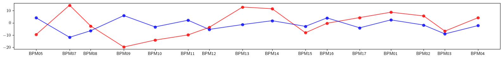
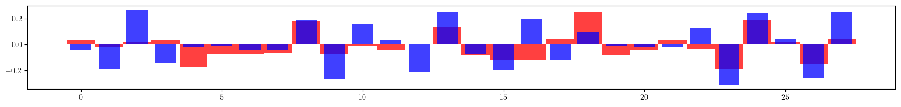
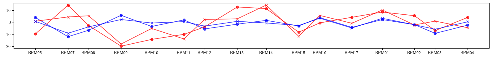
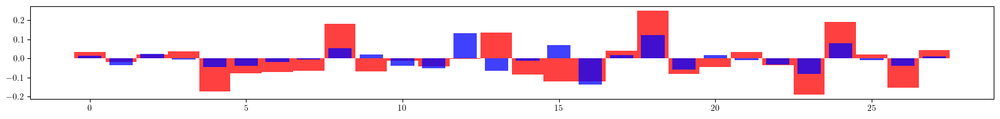
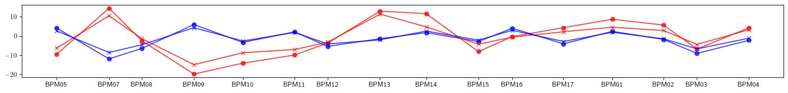
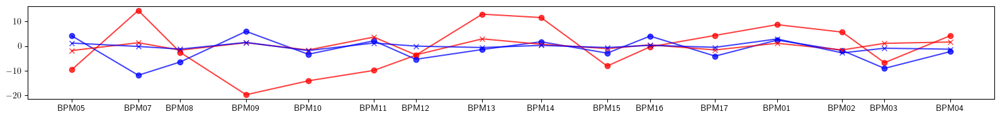
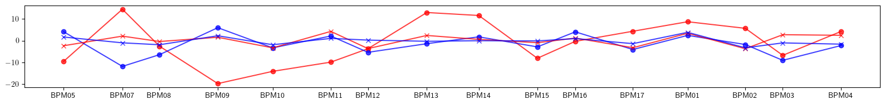

Example-51: Advance (Optics correction)
[1]:
# In this example model response matrices of normal and chromatic phase advances are used for correction
# ML style optimization is also performed for optics correction
[2]:
# Import
from pprint import pprint
import torch
from torch import Tensor
from torch.utils.data import TensorDataset
from torch.utils.data import DataLoader
from pathlib import Path
import matplotlib
from matplotlib import pyplot as plt
matplotlib.rcParams['text.usetex'] = True
from model.library.line import Line
from model.command.util import select
from model.command.external import load_sdds
from model.command.external import load_lattice
from model.command.build import build
from model.command.wrapper import group
from model.command.wrapper import forward
from model.command.wrapper import inverse
from model.command.wrapper import normalize
from model.command.wrapper import Wrapper
from model.command.tune import tune
from model.command.twiss import twiss
from model.command.twiss import chromatic_twiss
from model.command.advance import advance
from model.command.advance import chromatic_advance
[3]:
# Load ELEGANT twiss
path = Path('ic.twiss')
parameters, columns = load_sdds(path)
nu_qx:Tensor = torch.tensor(parameters['nux'] % 1, dtype=torch.float64)
nu_qy:Tensor = torch.tensor(parameters['nuy'] % 1, dtype=torch.float64)
# Set twiss parameters at BPMs
kinds = select(columns, 'ElementType', keep=False)
a_qx = select(columns, 'alphax', keep=False)
b_qx = select(columns, 'betax' , keep=False)
a_qy = select(columns, 'alphay', keep=False)
b_qy = select(columns, 'betay' , keep=False)
a_qx:Tensor = torch.tensor([value for (key, value), kind in zip(a_qx.items(), kinds.values()) if kind == 'MONI'], dtype=torch.float64)
b_qx:Tensor = torch.tensor([value for (key, value), kind in zip(b_qx.items(), kinds.values()) if kind == 'MONI'], dtype=torch.float64)
a_qy:Tensor = torch.tensor([value for (key, value), kind in zip(a_qy.items(), kinds.values()) if kind == 'MONI'], dtype=torch.float64)
b_qy:Tensor = torch.tensor([value for (key, value), kind in zip(b_qy.items(), kinds.values()) if kind == 'MONI'], dtype=torch.float64)
positions = select(columns, 's', keep=False).items()
positions = [value for (key, value), kind in zip(positions, kinds.values()) if kind == 'MONI']
[4]:
# Build and setup lattice
# Load ELEGANT table
path = Path('ic.lte')
data = load_lattice(path)
# Build ELEGANT table
ring:Line = build('RING', 'ELEGANT', data)
ring.flatten()
# Merge drifts
ring.merge()
# Split BPMs
ring.split((None, ['BPM'], None, None))
# Roll lattice start
ring.roll(1)
# Set linear dipoles
for element in ring:
if element.__class__.__name__ == 'Dipole':
element.linear = True
# Split lattice into lines by BPMs
ring.splice()
# Set number of elements of different kinds
nb = ring.describe['BPM']
nq = ring.describe['Quadrupole']
ns = ring.describe['Sextupole']
[5]:
# Compare tunes
nuqx, nuqy = tune(ring, [], alignment=False, matched=True)
print(torch.allclose(nu_qx, nuqx))
print(torch.allclose(nu_qy, nuqy))
True
True
[6]:
# Compare twiss
aqx, bqx, aqy, bqy = twiss(ring, [], alignment=False, matched=True, advance=True, full=False, convert=True).T
print(torch.allclose(a_qx, aqx))
print(torch.allclose(b_qx, bqx))
print(torch.allclose(a_qy, aqy))
print(torch.allclose(b_qy, bqy))
True
True
True
True
[7]:
# Test derivatives with respect kn and ks at the lattice start
kn = torch.zeros(nq, dtype=torch.float64)
ks = torch.zeros(nq, dtype=torch.float64)
result, *_ = torch.func.jacrev(lambda kn: advance(ring, [kn], ('kn', ['Quadrupole'], None, None), matched=True))(kn)
pprint(result)
print()
result, *_ = torch.func.jacrev(lambda ks: advance(ring, [ks], ('ks', ['Quadrupole'], None, None), matched=True))(ks)
pprint(result)
print()
# Note, first order derivatives with respect to ks are identicaly equal to zero as expected
# Second order derivative is not identicaly equal to zero in general
# In the following, only first order derivatives are used for optics correctios (lattice without coupling)
tensor([[ 0.1062, 0.1321, 0.2508, 0.1047, -0.2323, -0.1218, 0.0207, 0.0901,
-0.2828, -0.1534, -0.1003, 0.1049, 0.3543, 0.2371, 0.0391, 0.0137,
0.1178, -0.2663, -0.1903, -0.1382, -0.1483, -0.2131, -0.2389, 0.1460,
0.0278, 0.0292, 0.2080, 0.3302],
[-0.0703, 0.0397, -0.0028, -0.0334, 0.0909, 0.1122, -0.0339, -0.0639,
0.0021, 0.0591, 0.0098, -0.2945, -0.1397, 0.0792, 0.3057, 0.1834,
0.0682, -0.0502, 0.0598, 0.1259, 0.0753, 0.0062, -0.0379, 0.0883,
0.1483, 0.0521, -0.0259, -0.0698]], dtype=torch.float64)
tensor([[0., 0., 0., 0., 0., 0., 0., 0., 0., 0., 0., 0., 0., 0., 0., 0., 0., 0., 0., 0., 0., 0., 0., 0.,
0., 0., 0., 0.],
[0., 0., 0., 0., 0., 0., 0., 0., 0., 0., 0., 0., 0., 0., 0., 0., 0., 0., 0., 0., 0., 0., 0., 0.,
0., 0., 0., 0.]], dtype=torch.float64)
[8]:
# Compute advance derivatives with respect to quadrupole settings (normal and chromatic)
def fn_dtwiss_dkn(kn):
return advance(ring, [kn], ('kn', ['Quadrupole'], None, None), alignment=False, matched=True)
def fn_dtwiss_dp_dkn(kn):
return chromatic_advance(ring, [kn], ('kn', ['Quadrupole'], None, None), alignment=False, matched=True)
kn = torch.zeros(nq, dtype=torch.float64)
dtwiss_dkn = torch.func.jacrev(fn_dtwiss_dkn)(kn)
dtwiss_dp_dkn = torch.func.jacrev(fn_dtwiss_dp_dkn)(kn)
print(dtwiss_dkn.shape)
print(dtwiss_dp_dkn.shape)
torch.Size([16, 2, 28])
torch.Size([16, 2, 28])
[9]:
# Set lattice with focusing errors (no coupling)
error:Line = ring.clone()
nq = error.describe['Quadrupole']
error_kn = 0.1*torch.randn(nq, dtype=torch.float64)
index = 0
label = ''
for line in error.sequence:
for element in line:
if element.__class__.__name__ == 'Quadrupole':
if label != element.name:
index +=1
label = element.name
element.kn = (element.kn + error_kn[index - 1]).item()
[10]:
# Compute twiss and plot beta beating
ax_model, bx_model, ay_model, by_model = twiss(ring, [], alignment=False, matched=True, advance=True, full=False, convert=True).T
ax_error, bx_error, ay_error, by_error = twiss(error, [], alignment=False, matched=True, advance=True, full=False, convert=True).T
# Compare twiss
print((ax_model - ax_error).norm())
print((bx_model - bx_error).norm())
print((ay_model - ay_error).norm())
print((by_model - by_error).norm())
print()
# Plot beta beating
plt.figure(figsize=(16, 2))
plt.plot(ring.locations().cpu().numpy(), 100*((bx_model - bx_error)/bx_model).cpu().numpy(), color='red', alpha=0.75, marker='o')
plt.plot(ring.locations().cpu().numpy(), 100*((by_model - by_error)/by_model).cpu().numpy(), color='blue', alpha=0.75, marker='o')
plt.xticks(ticks=positions, labels=['BPM05', 'BPM07', 'BPM08', 'BPM09', 'BPM10', 'BPM11', 'BPM12', 'BPM13', 'BPM14', 'BPM15', 'BPM16', 'BPM17', 'BPM01', 'BPM02', 'BPM03', 'BPM04'])
plt.tight_layout()
plt.show()
tensor(1.6391, dtype=torch.float64)
tensor(0.9940, dtype=torch.float64)
tensor(0.4831, dtype=torch.float64)
tensor(0.2865, dtype=torch.float64)

[11]:
# Test Twiss response
twiss_error = advance(error, [], alignment=False, matched=True)
twiss_model = advance(ring, [], alignment=False, matched=True)
print((twiss_error - (twiss_model + 0.0*(dtwiss_dkn @ error_kn))).norm())
print((twiss_error - (twiss_model + 1.0*(dtwiss_dkn @ error_kn))).norm())
tensor(0.3569, dtype=torch.float64)
tensor(0.0325, dtype=torch.float64)
[12]:
# Perform correction (model to experiment)
# Set response matrix
matrix = dtwiss_dkn.reshape(-1, nq)
# Set target twiss parameters
twiss_error = advance(error, [], alignment=False, matched=True)
# Set learning rate
lr = 0.01
# Set initial values
kn = torch.zeros_like(error_kn)
# Fit
for _ in range(32):
twiss_model = advance(ring, [kn], ('kn', ['Quadrupole'], None, None), alignment=False, matched=True)
dkn = - lr*torch.linalg.lstsq(matrix, (twiss_model - twiss_error).flatten(), driver='gelsd').solution
kn += dkn
print((twiss_model - twiss_error).norm())
# Plot final quadrupole settings
plt.figure(figsize=(16, 2))
plt.bar(range(len(error_kn)), error_kn.cpu().numpy(), color='red', alpha=0.75, width=1)
plt.bar(range(len(kn)), +kn.cpu().numpy(), color='blue', alpha=0.75, width=0.75)
plt.tight_layout()
plt.show()
tensor(0.3569, dtype=torch.float64)
tensor(0.3533, dtype=torch.float64)
tensor(0.3499, dtype=torch.float64)
tensor(0.3464, dtype=torch.float64)
tensor(0.3431, dtype=torch.float64)
tensor(0.3398, dtype=torch.float64)
tensor(0.3366, dtype=torch.float64)
tensor(0.3334, dtype=torch.float64)
tensor(0.3303, dtype=torch.float64)
tensor(0.3272, dtype=torch.float64)
tensor(0.3242, dtype=torch.float64)
tensor(0.3212, dtype=torch.float64)
tensor(0.3183, dtype=torch.float64)
tensor(0.3154, dtype=torch.float64)
tensor(0.3126, dtype=torch.float64)
tensor(0.3098, dtype=torch.float64)
tensor(0.3071, dtype=torch.float64)
tensor(0.3044, dtype=torch.float64)
tensor(0.3018, dtype=torch.float64)
tensor(0.2991, dtype=torch.float64)
tensor(0.2966, dtype=torch.float64)
tensor(0.2940, dtype=torch.float64)
tensor(0.2915, dtype=torch.float64)
tensor(0.2890, dtype=torch.float64)
tensor(0.2865, dtype=torch.float64)
tensor(0.2841, dtype=torch.float64)
tensor(0.2817, dtype=torch.float64)
tensor(0.2793, dtype=torch.float64)
tensor(0.2770, dtype=torch.float64)
tensor(0.2746, dtype=torch.float64)
tensor(0.2723, dtype=torch.float64)
tensor(0.2700, dtype=torch.float64)

[13]:
# Apply corrections
lattice:Line = error.clone()
index = 0
label = ''
for line in lattice.sequence:
for element in line:
if element.__class__.__name__ == 'Quadrupole':
if label != element.name:
index +=1
label = element.name
element.kn = (element.kn - kn[index - 1]).item()
[14]:
# Compute twiss and plot beta beating
ax_model, bx_model, ay_model, by_model = twiss(ring, [], alignment=False, matched=True, advance=True, full=False, convert=True).T
ax_error, bx_error, ay_error, by_error = twiss(error, [], alignment=False, matched=True, advance=True, full=False, convert=True).T
ax_final, bx_final, ay_final, by_final = twiss(lattice, [], alignment=False, matched=True, advance=True, full=False, convert=True).T
# Plot beta beating
plt.figure(figsize=(16, 2))
plt.plot(ring.locations().cpu().numpy(), 100*((bx_model - bx_error)/bx_model).cpu().numpy(), color='red', alpha=0.75, marker='o')
plt.plot(ring.locations().cpu().numpy(), 100*((by_model - by_error)/by_model).cpu().numpy(), color='blue', alpha=0.75, marker='o')
plt.plot(ring.locations().cpu().numpy(), 100*((bx_model - bx_final)/bx_model).cpu().numpy(), color='red', alpha=0.75, marker='x')
plt.plot(ring.locations().cpu().numpy(), 100*((by_model - by_final)/by_model).cpu().numpy(), color='blue', alpha=0.75, marker='x')
plt.xticks(ticks=positions, labels=['BPM05', 'BPM07', 'BPM08', 'BPM09', 'BPM10', 'BPM11', 'BPM12', 'BPM13', 'BPM14', 'BPM15', 'BPM16', 'BPM17', 'BPM01', 'BPM02', 'BPM03', 'BPM04'])
plt.tight_layout()
plt.show()

[15]:
# Test Twiss response (chromatic)
twiss_error = chromatic_advance(error, [], alignment=False, matched=True)
twiss_model = chromatic_advance(ring, [], alignment=False, matched=True)
print((twiss_error - (twiss_model + 0.0*(dtwiss_dp_dkn @ error_kn))).norm())
print((twiss_error - (twiss_model + 1.0*(dtwiss_dp_dkn @ error_kn))).norm())
tensor(13.0000, dtype=torch.float64)
tensor(1.2593, dtype=torch.float64)
[16]:
# Perform correction (model to experiment) including chromatic twiss
# Set response matrix
matrix = torch.vstack([dtwiss_dkn.reshape(-1, nq), dtwiss_dp_dkn.reshape(-1, nq)])
# Set target twiss parameters
twiss_error = advance(error, [], alignment=False, matched=True)
chromatic_twiss_error = chromatic_advance(error, [], alignment=False, matched=True)
# Set learning rate
lr = 0.01
# Set initial values
kn = torch.zeros_like(error_kn)
# Fit
for _ in range(32):
twiss_model = advance(ring, [kn], ('kn', ['Quadrupole'], None, None), alignment=False, matched=True)
chromatic_twiss_model = chromatic_advance(ring, [kn], ('kn', ['Quadrupole'], None, None), alignment=False, matched=True)
dkn = - lr*torch.linalg.lstsq(matrix, torch.stack([twiss_model - twiss_error, chromatic_twiss_model - chromatic_twiss_error]).flatten(), driver='gelsd').solution
kn += dkn
print(torch.stack([twiss_model - twiss_error, chromatic_twiss_model - chromatic_twiss_error]).norm())
# Plot final quadrupole settings
plt.figure(figsize=(16, 2))
plt.bar(range(len(error_kn)), error_kn.cpu().numpy(), color='red', alpha=0.75, width=1)
plt.bar(range(len(kn)), +kn.cpu().numpy(), color='blue', alpha=0.75, width=0.75)
plt.tight_layout()
plt.show()
tensor(13.0049, dtype=torch.float64)
tensor(12.8748, dtype=torch.float64)
tensor(12.7459, dtype=torch.float64)
tensor(12.6181, dtype=torch.float64)
tensor(12.4914, dtype=torch.float64)
tensor(12.3658, dtype=torch.float64)
tensor(12.2412, dtype=torch.float64)
tensor(12.1178, dtype=torch.float64)
tensor(11.9954, dtype=torch.float64)
tensor(11.8742, dtype=torch.float64)
tensor(11.7539, dtype=torch.float64)
tensor(11.6348, dtype=torch.float64)
tensor(11.5167, dtype=torch.float64)
tensor(11.3996, dtype=torch.float64)
tensor(11.2835, dtype=torch.float64)
tensor(11.1685, dtype=torch.float64)
tensor(11.0546, dtype=torch.float64)
tensor(10.9416, dtype=torch.float64)
tensor(10.8296, dtype=torch.float64)
tensor(10.7187, dtype=torch.float64)
tensor(10.6087, dtype=torch.float64)
tensor(10.4997, dtype=torch.float64)
tensor(10.3917, dtype=torch.float64)
tensor(10.2847, dtype=torch.float64)
tensor(10.1786, dtype=torch.float64)
tensor(10.0735, dtype=torch.float64)
tensor(9.9694, dtype=torch.float64)
tensor(9.8661, dtype=torch.float64)
tensor(9.7639, dtype=torch.float64)
tensor(9.6625, dtype=torch.float64)
tensor(9.5621, dtype=torch.float64)
tensor(9.4626, dtype=torch.float64)

[17]:
# Apply corrections
lattice:Line = error.clone()
index = 0
label = ''
for line in lattice.sequence:
for element in line:
if element.__class__.__name__ == 'Quadrupole':
if label != element.name:
index +=1
label = element.name
element.kn = (element.kn - kn[index - 1]).item()
[18]:
# Compute twiss and plot beta beating
ax_model, bx_model, ay_model, by_model = twiss(ring, [], alignment=False, matched=True, advance=True, full=False, convert=True).T
ax_error, bx_error, ay_error, by_error = twiss(error, [], alignment=False, matched=True, advance=True, full=False, convert=True).T
ax_final, bx_final, ay_final, by_final = twiss(lattice, [], alignment=False, matched=True, advance=True, full=False, convert=True).T
# Plot beta beating
plt.figure(figsize=(16, 2))
plt.plot(ring.locations().cpu().numpy(), 100*((bx_model - bx_error)/bx_model).cpu().numpy(), color='red', alpha=0.75, marker='o')
plt.plot(ring.locations().cpu().numpy(), 100*((by_model - by_error)/by_model).cpu().numpy(), color='blue', alpha=0.75, marker='o')
plt.plot(ring.locations().cpu().numpy(), 100*((bx_model - bx_final)/bx_model).cpu().numpy(), color='red', alpha=0.75, marker='x')
plt.plot(ring.locations().cpu().numpy(), 100*((by_model - by_final)/by_model).cpu().numpy(), color='blue', alpha=0.75, marker='x')
plt.xticks(ticks=positions, labels=['BPM05', 'BPM07', 'BPM08', 'BPM09', 'BPM10', 'BPM11', 'BPM12', 'BPM13', 'BPM14', 'BPM15', 'BPM16', 'BPM17', 'BPM01', 'BPM02', 'BPM03', 'BPM04'])
plt.tight_layout()
plt.show()

[19]:
# ML style correction (model to experiment)
# Set target twiss parameters
twiss_error = advance(error, [], alignment=False, matched=True)
# Set learning rate
lr = 0.005
# Set parametric twiss
def twiss_model(kn):
return advance(ring, [kn], ('kn', ['Quadrupole'], None, None), alignment=False, matched=True)
# Set objective function
def objective(kn):
return (twiss_error - twiss_model(kn)).norm()
# Set initial values
kn = torch.zeros_like(error_kn)
# Test objective function
print(objective(0.0*error_kn))
print(objective(1.0*error_kn))
print()
# Set normalized objective
objective = normalize(objective, [(-0.5, 0.5)])
# Test normalized objective
print(objective(*forward([0.0*error_kn], [(-0.5, 0.5)])))
print(objective(*forward([1.0*error_kn], [(-0.5, 0.5)])))
print()
# Normalize initial settings
kn, *_ = forward([kn], [(-0.5, 0.5)])
# Set model (forward returns evaluated objective)
model = Wrapper(objective, kn)
# Set optimizer
optimizer = torch.optim.Adam(model.parameters(), lr=lr)
# Perform optimization
for epoch in range(64):
value = model()
value.backward()
optimizer.step()
optimizer.zero_grad()
print(value.detach())
tensor(0.3569, dtype=torch.float64)
tensor(0., dtype=torch.float64)
tensor(0.3569, dtype=torch.float64)
tensor(0., dtype=torch.float64)
tensor(0.3569, dtype=torch.float64)
tensor(0.3282, dtype=torch.float64)
tensor(0.3006, dtype=torch.float64)
tensor(0.2745, dtype=torch.float64)
tensor(0.2504, dtype=torch.float64)
tensor(0.2285, dtype=torch.float64)
tensor(0.2089, dtype=torch.float64)
tensor(0.1917, dtype=torch.float64)
tensor(0.1769, dtype=torch.float64)
tensor(0.1645, dtype=torch.float64)
tensor(0.1540, dtype=torch.float64)
tensor(0.1446, dtype=torch.float64)
tensor(0.1356, dtype=torch.float64)
tensor(0.1264, dtype=torch.float64)
tensor(0.1172, dtype=torch.float64)
tensor(0.1082, dtype=torch.float64)
tensor(0.0999, dtype=torch.float64)
tensor(0.0927, dtype=torch.float64)
tensor(0.0875, dtype=torch.float64)
tensor(0.0845, dtype=torch.float64)
tensor(0.0832, dtype=torch.float64)
tensor(0.0822, dtype=torch.float64)
tensor(0.0806, dtype=torch.float64)
tensor(0.0776, dtype=torch.float64)
tensor(0.0733, dtype=torch.float64)
tensor(0.0685, dtype=torch.float64)
tensor(0.0639, dtype=torch.float64)
tensor(0.0601, dtype=torch.float64)
tensor(0.0572, dtype=torch.float64)
tensor(0.0547, dtype=torch.float64)
tensor(0.0521, dtype=torch.float64)
tensor(0.0494, dtype=torch.float64)
tensor(0.0469, dtype=torch.float64)
tensor(0.0452, dtype=torch.float64)
tensor(0.0443, dtype=torch.float64)
tensor(0.0441, dtype=torch.float64)
tensor(0.0442, dtype=torch.float64)
tensor(0.0441, dtype=torch.float64)
tensor(0.0431, dtype=torch.float64)
tensor(0.0412, dtype=torch.float64)
tensor(0.0389, dtype=torch.float64)
tensor(0.0368, dtype=torch.float64)
tensor(0.0350, dtype=torch.float64)
tensor(0.0336, dtype=torch.float64)
tensor(0.0325, dtype=torch.float64)
tensor(0.0315, dtype=torch.float64)
tensor(0.0308, dtype=torch.float64)
tensor(0.0302, dtype=torch.float64)
tensor(0.0297, dtype=torch.float64)
tensor(0.0292, dtype=torch.float64)
tensor(0.0284, dtype=torch.float64)
tensor(0.0275, dtype=torch.float64)
tensor(0.0268, dtype=torch.float64)
tensor(0.0265, dtype=torch.float64)
tensor(0.0263, dtype=torch.float64)
tensor(0.0261, dtype=torch.float64)
tensor(0.0258, dtype=torch.float64)
tensor(0.0254, dtype=torch.float64)
tensor(0.0249, dtype=torch.float64)
tensor(0.0245, dtype=torch.float64)
tensor(0.0239, dtype=torch.float64)
tensor(0.0234, dtype=torch.float64)
tensor(0.0231, dtype=torch.float64)
tensor(0.0229, dtype=torch.float64)
[20]:
# Apply corrections
kn, *_ = inverse([kn], [(-0.5, 0.5)])
lattice:Line = error.clone()
index = 0
label = ''
for line in lattice.sequence:
for element in line:
if element.__class__.__name__ == 'Quadrupole':
if label != element.name:
index +=1
label = element.name
element.kn = (element.kn - kn[index - 1]).item()
[21]:
# Compute twiss and plot beta beating
ax_model, bx_model, ay_model, by_model = twiss(ring, [], alignment=False, matched=True, advance=True, full=False, convert=True).T
ax_error, bx_error, ay_error, by_error = twiss(error, [], alignment=False, matched=True, advance=True, full=False, convert=True).T
ax_final, bx_final, ay_final, by_final = twiss(lattice, [], alignment=False, matched=True, advance=True, full=False, convert=True).T
# Plot beta beating
plt.figure(figsize=(16, 2))
plt.plot(ring.locations().cpu().numpy(), 100*((bx_model - bx_error)/bx_model).cpu().numpy(), color='red', alpha=0.75, marker='o')
plt.plot(ring.locations().cpu().numpy(), 100*((by_model - by_error)/by_model).cpu().numpy(), color='blue', alpha=0.75, marker='o')
plt.plot(ring.locations().cpu().numpy(), 100*((bx_model - bx_final)/bx_model).cpu().numpy(), color='red', alpha=0.75, marker='x')
plt.plot(ring.locations().cpu().numpy(), 100*((by_model - by_final)/by_model).cpu().numpy(), color='blue', alpha=0.75, marker='x')
plt.xticks(ticks=positions, labels=['BPM05', 'BPM07', 'BPM08', 'BPM09', 'BPM10', 'BPM11', 'BPM12', 'BPM13', 'BPM14', 'BPM15', 'BPM16', 'BPM17', 'BPM01', 'BPM02', 'BPM03', 'BPM04'])
plt.tight_layout()
plt.show()

[22]:
# ML style correction (batched)
# Set target twiss parameters
twiss_error = advance(error, [], alignment=False, matched=True)
# Set learning rate
lr = 0.005
# Set batched function
def task(Is, kn):
return advance(ring, [kn], ('kn', ['Quadrupole'], None, None), alignment=False, matched=True)[Is]
# Set initial values
kn = torch.zeros_like(error_kn)
# Normalize objective
task = normalize(task, [(None, None), (-0.5, 0.5)])
# Normalize initial settings
kn, *_ = forward([kn], [(-0.5, 0.5)])
# Set model
model = Wrapper(task, kn)
# Set optimizer
optimizer = torch.optim.Adam(model.parameters(), lr=lr)
# Set features and labels
X = torch.arange(len(ring))
y = twiss_error.clone()
# Set dataset
batch_size = 16
dataset = TensorDataset(X.clone(), y.clone())
dataloader = DataLoader(dataset, batch_size=batch_size, shuffle=True)
# Set loss funtion
lf = torch.nn.MSELoss()
# Perfom optimization
for epoch in range(64):
for batch, (X, y) in enumerate(dataloader):
y_hat = model(X)
value = lf(y_hat, y)
value.backward()
optimizer.step()
optimizer.zero_grad()
with torch.no_grad():
print(value.detach())
tensor(0.0040, dtype=torch.float64)
tensor(0.0034, dtype=torch.float64)
tensor(0.0028, dtype=torch.float64)
tensor(0.0024, dtype=torch.float64)
tensor(0.0020, dtype=torch.float64)
tensor(0.0016, dtype=torch.float64)
tensor(0.0014, dtype=torch.float64)
tensor(0.0012, dtype=torch.float64)
tensor(0.0010, dtype=torch.float64)
tensor(0.0009, dtype=torch.float64)
tensor(0.0008, dtype=torch.float64)
tensor(0.0007, dtype=torch.float64)
tensor(0.0006, dtype=torch.float64)
tensor(0.0006, dtype=torch.float64)
tensor(0.0005, dtype=torch.float64)
tensor(0.0005, dtype=torch.float64)
tensor(0.0004, dtype=torch.float64)
tensor(0.0004, dtype=torch.float64)
tensor(0.0003, dtype=torch.float64)
tensor(0.0003, dtype=torch.float64)
tensor(0.0003, dtype=torch.float64)
tensor(0.0002, dtype=torch.float64)
tensor(0.0002, dtype=torch.float64)
tensor(0.0002, dtype=torch.float64)
tensor(0.0002, dtype=torch.float64)
tensor(0.0002, dtype=torch.float64)
tensor(0.0002, dtype=torch.float64)
tensor(0.0002, dtype=torch.float64)
tensor(0.0002, dtype=torch.float64)
tensor(0.0002, dtype=torch.float64)
tensor(0.0002, dtype=torch.float64)
tensor(0.0002, dtype=torch.float64)
tensor(0.0002, dtype=torch.float64)
tensor(0.0001, dtype=torch.float64)
tensor(0.0001, dtype=torch.float64)
tensor(0.0001, dtype=torch.float64)
tensor(0.0001, dtype=torch.float64)
tensor(9.6877e-05, dtype=torch.float64)
tensor(9.1666e-05, dtype=torch.float64)
tensor(8.7230e-05, dtype=torch.float64)
tensor(8.3082e-05, dtype=torch.float64)
tensor(7.8988e-05, dtype=torch.float64)
tensor(7.4955e-05, dtype=torch.float64)
tensor(7.1150e-05, dtype=torch.float64)
tensor(6.7778e-05, dtype=torch.float64)
tensor(6.4986e-05, dtype=torch.float64)
tensor(6.2814e-05, dtype=torch.float64)
tensor(6.1198e-05, dtype=torch.float64)
tensor(6.0007e-05, dtype=torch.float64)
tensor(5.9105e-05, dtype=torch.float64)
tensor(5.8375e-05, dtype=torch.float64)
tensor(5.7739e-05, dtype=torch.float64)
tensor(5.7134e-05, dtype=torch.float64)
tensor(5.6496e-05, dtype=torch.float64)
tensor(5.5748e-05, dtype=torch.float64)
tensor(5.4812e-05, dtype=torch.float64)
tensor(5.3630e-05, dtype=torch.float64)
tensor(5.2191e-05, dtype=torch.float64)
tensor(5.0546e-05, dtype=torch.float64)
tensor(4.8795e-05, dtype=torch.float64)
tensor(4.7061e-05, dtype=torch.float64)
tensor(4.5458e-05, dtype=torch.float64)
tensor(4.4060e-05, dtype=torch.float64)
tensor(4.2890e-05, dtype=torch.float64)
[23]:
# Apply corrections
kn, *_ = inverse([kn], [(-0.5, 0.5)])
lattice:Line = error.clone()
index = 0
label = ''
for line in lattice.sequence:
for element in line:
if element.__class__.__name__ == 'Quadrupole':
if label != element.name:
index +=1
label = element.name
element.kn = (element.kn - kn[index - 1]).item()
[24]:
# Compute twiss and plot beta beating
ax_model, bx_model, ay_model, by_model = twiss(ring, [], alignment=False, matched=True, advance=True, full=False, convert=True).T
ax_error, bx_error, ay_error, by_error = twiss(error, [], alignment=False, matched=True, advance=True, full=False, convert=True).T
ax_final, bx_final, ay_final, by_final = twiss(lattice, [], alignment=False, matched=True, advance=True, full=False, convert=True).T
# Plot beta beating
plt.figure(figsize=(16, 2))
plt.plot(ring.locations().cpu().numpy(), 100*((bx_model - bx_error)/bx_model).cpu().numpy(), color='red', alpha=0.75, marker='o')
plt.plot(ring.locations().cpu().numpy(), 100*((by_model - by_error)/by_model).cpu().numpy(), color='blue', alpha=0.75, marker='o')
plt.plot(ring.locations().cpu().numpy(), 100*((bx_model - bx_final)/bx_model).cpu().numpy(), color='red', alpha=0.75, marker='x')
plt.plot(ring.locations().cpu().numpy(), 100*((by_model - by_final)/by_model).cpu().numpy(), color='blue', alpha=0.75, marker='x')
plt.xticks(ticks=positions, labels=['BPM05', 'BPM07', 'BPM08', 'BPM09', 'BPM10', 'BPM11', 'BPM12', 'BPM13', 'BPM14', 'BPM15', 'BPM16', 'BPM17', 'BPM01', 'BPM02', 'BPM03', 'BPM04'])
plt.tight_layout()
plt.show()
